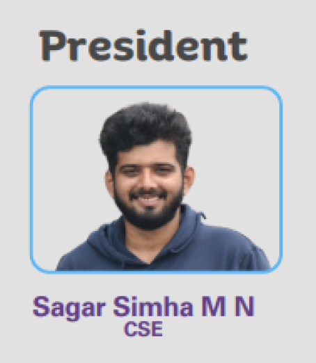

iste student chapter

Creating an ISTE (International Society for Technology in Education) club student chapter is a fantastic initiative that can provide numerous benefits to students interested in technology and education. Here's some information to consider as you embark on this endeavor:
- Purpose: Clearly define the purpose of your ISTE student chapter. Typically, this involves fostering interest and proficiency in educational technology among students, providing networking opportunities, and facilitating professional development.
- Leadership: Establish a leadership team comprising students who are passionate about technology in education. Roles may include president, vice president, treasurer, secretary, and committee chairs for various activities.
- Membership: Open membership to all students who are interested in technology and its application in education. Consider reaching out to students from diverse backgrounds and academic disciplines to enrich discussions and activities.
- Activities: Plan a variety of activities to engage members and achieve the club's objectives. This could include workshops, seminars, hackathons, guest lectures, and collaborative projects related to educational technology.
- Collaboration: Seek opportunities to collaborate with faculty members, other student organizations, and industry partners who share similar interests or expertise in educational tec Resources: Take advantage of resources provided by ISTE, such as educational webinars, research publications, and networking opportunities with professionals in the field of educational technology.
- Community Engagement: Consider how your chapter can contribute to the local community by organizing outreach programs, volunteering at schools, or participating in educational initiatives.
- Communication: Establish effective communication channels to keep members informed about upcoming events, opportunities, and club updates. This could include a website, social media accounts, email newsletters, and regular meetings.
- Evaluation: Regularly assess the effectiveness of your chapter's activities and solicit feedback from members to identify areas for improvement and ensure that the club remains aligned with its goals.
- Recognition: As your chapter grows and accomplishes its objectives, consider applying for recognition and awards offered by ISTE to acknowledge the efforts and achievements of your members.